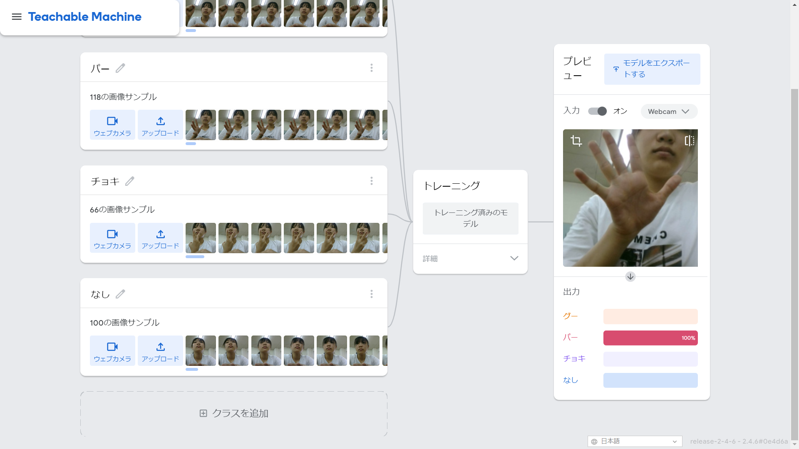
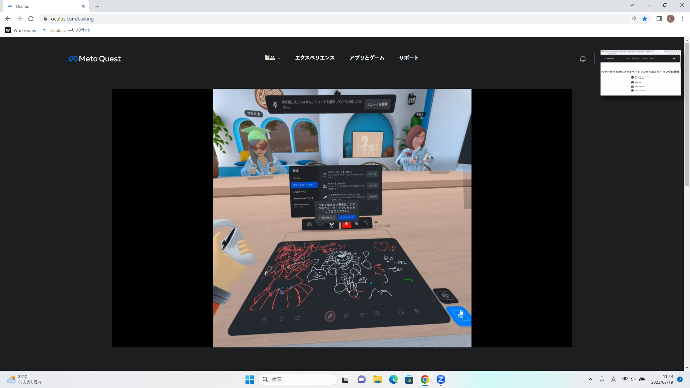

第2週目
2-1 １週目のレポートをHTMLで作る
１週目のレポート
1.内容
scratchを動かす
自分のホームページを作る
2.感想
先週のmicrobitのプログラミングよりも座標とかが絡んでくるのでその分難しかった。
自分のサイトを作るなんてできるのかと思ったけど案外簡単にできて、今は誰でも簡単にサイトが作れることを改めて実感した。
2-2 機械学習体験

1.内容
teachable machineで手の形を学習する。
1週間目の授業で作った自分のサイトでレポートを作る。
2.感想
機会に実際に学習させることが簡単にできることに驚いた。
本当にできるのか半信半疑だったけどしっかりじゃんけんの形を認識できていて文明の進化を身をもって感じた。
2-3 VR（バーチャルリアリティー：Virtual Reality）会議室の体験

1.内容
VRでクラスルームに入りほかの人と交流する。
2.感想
ただの机がＶＲの中ではホワイトボードになったり、立つと何もない空間が大きな壁かけのボードになっていたりして凄いと思ったし、体験していて楽しかった。
ただ、現実世界で歩くのと連動してＶＲでも動くとなると危ないし、だからといってコントローラーの操作で移動するとすごく酔ってしまう人が多いと思うので、そこが課題だと思った。